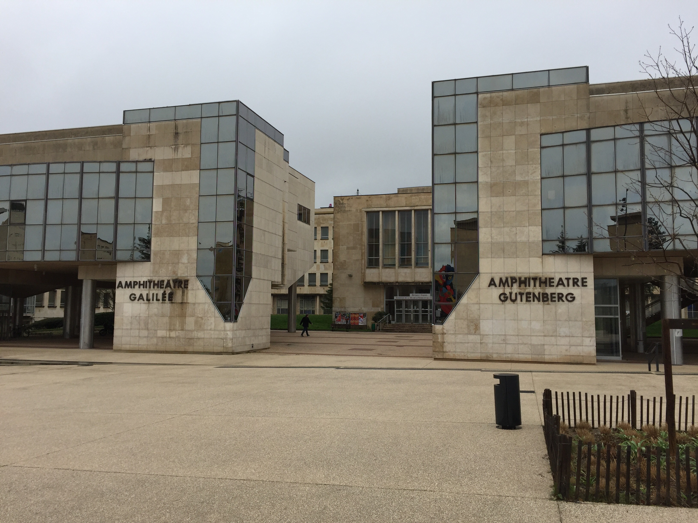
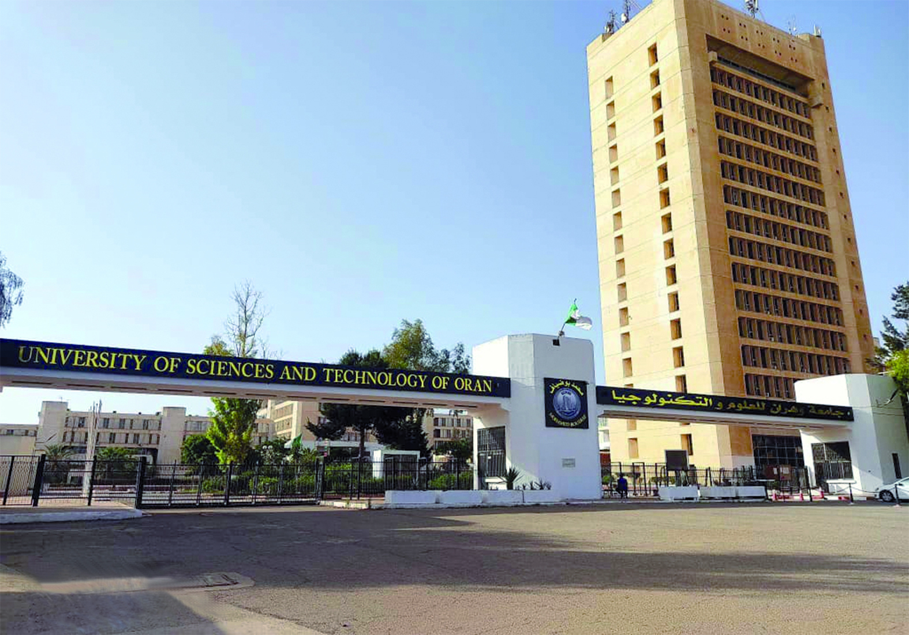

Education
My academic journey and qualifications

Since September 2024University of Burgundy (UB)
Master in Database and Artificial Intelligence
Currently pursuing a Master's degree specializing in databases, machine learning, and artificial intelligence applications in Dijon, France.
View Curriculum
Sept 2022 - June 2024University of Science and Technology - Mohamed Boudiaf (USTO)
Master in Artificial Intelligence and its Applications
Completed a Master's degree focused on AI, machine learning algorithms, deep learning, and their practical applications in Oran, Algeria.
View CurriculumUniversity of Science and Technology - Mohamed Boudiaf (USTO)
Bachelor's in Information Systems and Software Engineering
Obtained a Bachelor's degree covering software development, databases, algorithms, and information systems engineering.